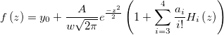
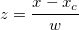
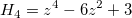

クロマトグラフィで使われるGram-Charlierピーク関数
パラメータ数: 6
パラメータの名前:y0, xc, A, w, a3, a4
意味: y0 = オフセット, xc = 中心, A = 面積, w = 半幅, a3 = unknown, a4 = unknown
下側境界: w > 0.0
上側境界: なし
nlf_gcas(x,y0,xc,A,w,a3,a4)
FITFUNC\GRMCHARL.FDF
Peak Functions, PFW, Chromatography